import matplotlib.pyplot as plt
import mikeioDataArray - Dfs123 plotting
A DataArray with gridded data, can be plotted in many different ways.
Dfs1
ds = mikeio.read("../tests/testdata/vu_tide_hourly.dfs1")
ds = ds.rename({"Tidal current component (geographic East)":"Tidal current u-comp"})
da = ds["Tidal current u-comp"]
da<mikeio.DataArray>
name: Tidal current u-comp
dims: (time:721, x:11)
time: 2021-08-01 00:00:00 - 2021-08-31 00:00:00 (721 records)
geometry: Grid1D (n=11, dx=0.09818)da.geometry<mikeio.Grid1D>
x: [0, 0.09818, ..., 0.9818] (nx=11, dx=0.09818)da[0:10:2].plot();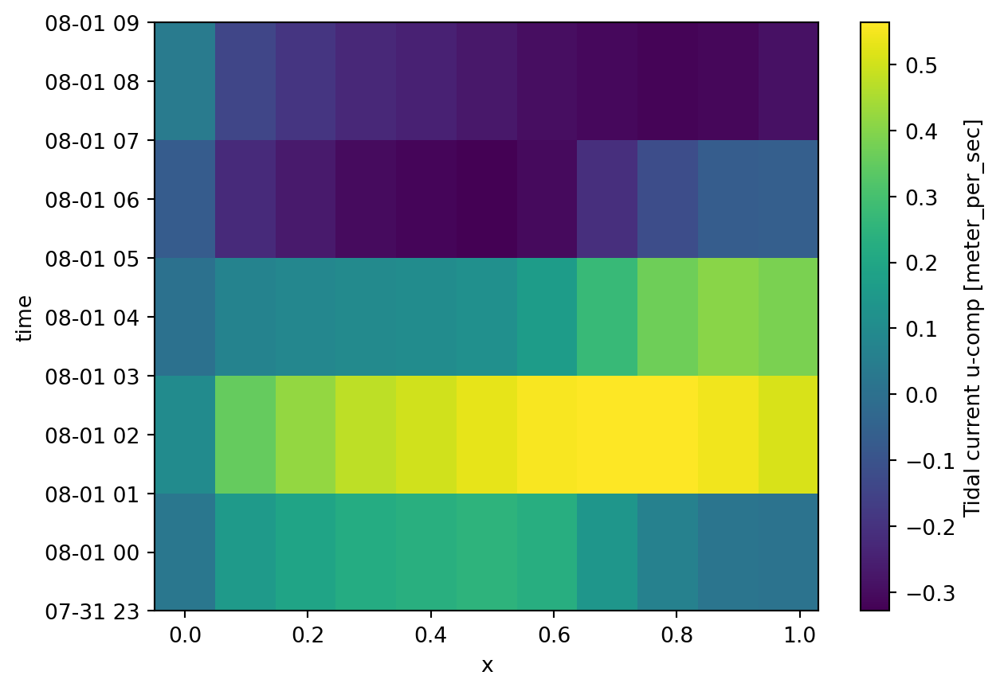
da[0:10:2].plot.line()
plt.legend(da.time[0:10:2]);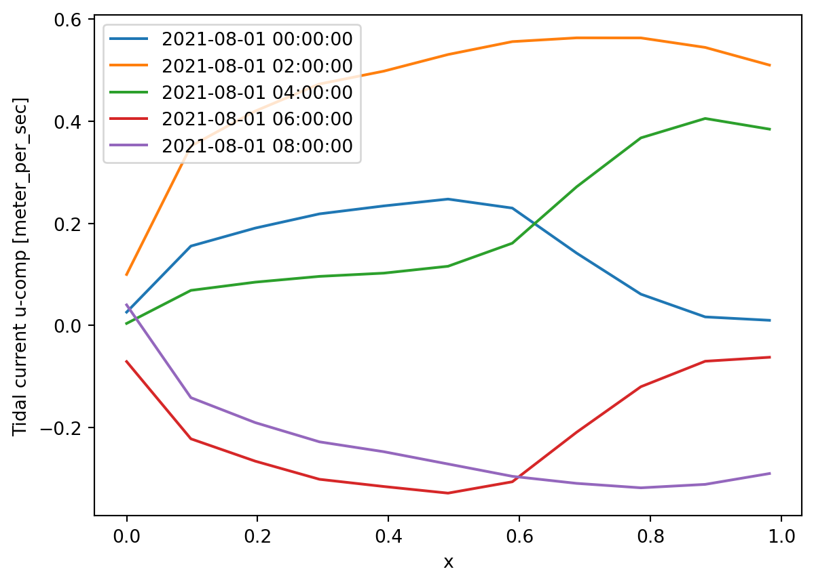
# plot all points on line as time series
da.plot.timeseries();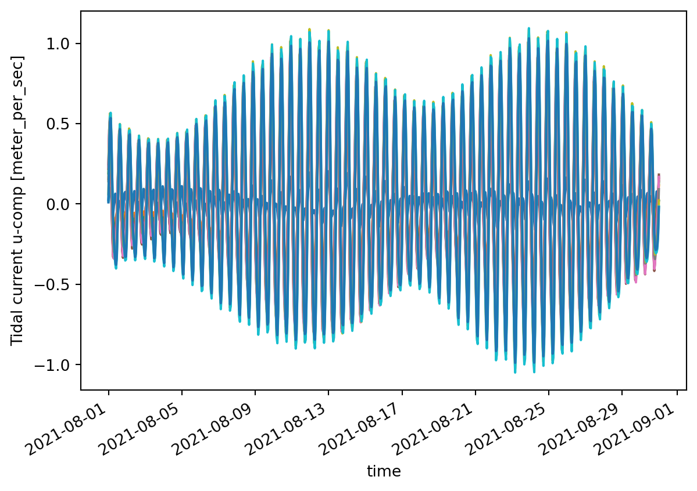
# first 48 hours...
da[:49].plot.pcolormesh();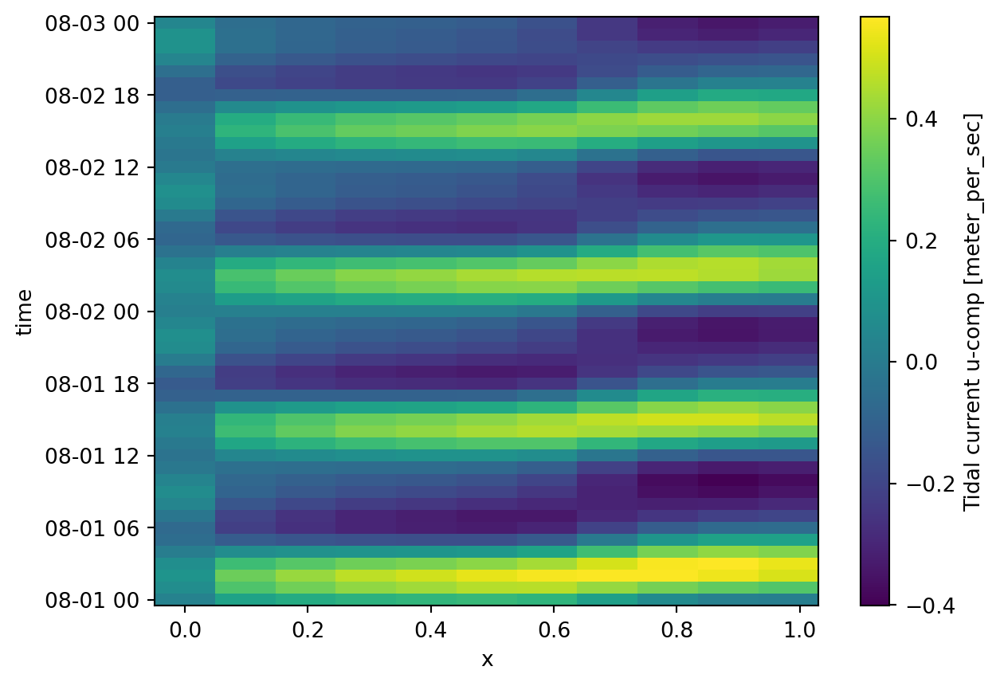
# single point on line as timeseries
da.sel(x=0.5).sel(time=slice("2021-08-01","2021-08-03")).plot();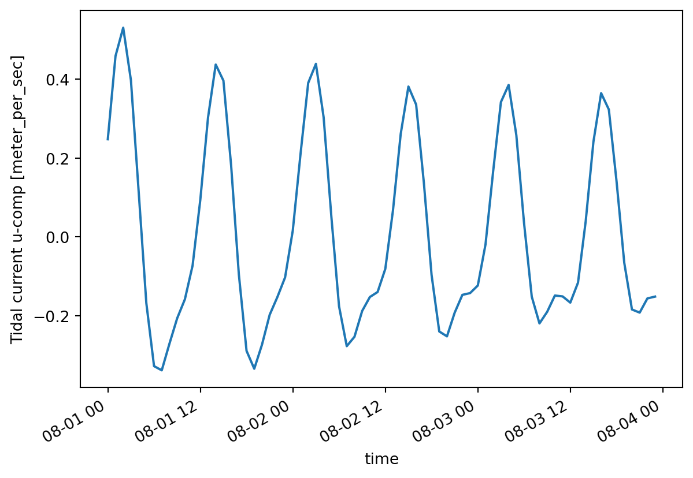
# all data as histogram
da.plot.hist(bins=40);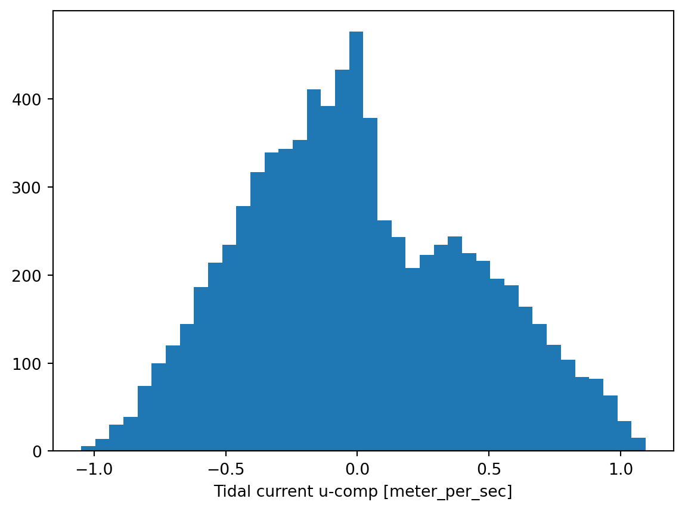
Dfs2
da = mikeio.read("../tests/testdata/gebco_sound.dfs2")[0]
da<mikeio.DataArray>
name: Elevation
dims: (time:1, y:264, x:216)
time: 2020-05-15 11:04:52 (time-invariant)
geometry: Grid2D (ny=264, nx=216)da.geometry<mikeio.Grid2D>
x: [12.2, 12.21, ..., 13.1] (nx=216, dx=0.004167)
y: [55.2, 55.21, ..., 56.3] (ny=264, dy=0.004167)
projection: LONG/LATda.plot(figsize=(10,6));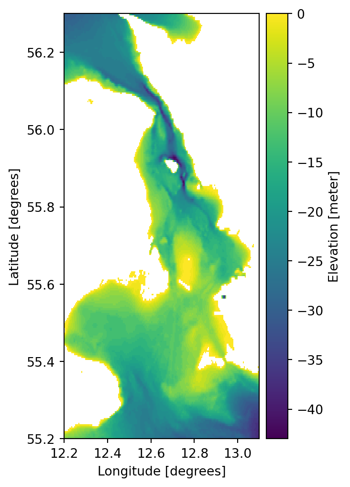
It is also possible to customize the labels of the axes as well as the color bar, e.g. for localized adaption.
da.plot.contourf(figsize=(10,6), levels=4, label="Højde (m)");
plt.xlabel("Længdekreds (°)")
plt.ylabel("Breddekreds (°)")Text(0, 0.5, 'Breddekreds (°)')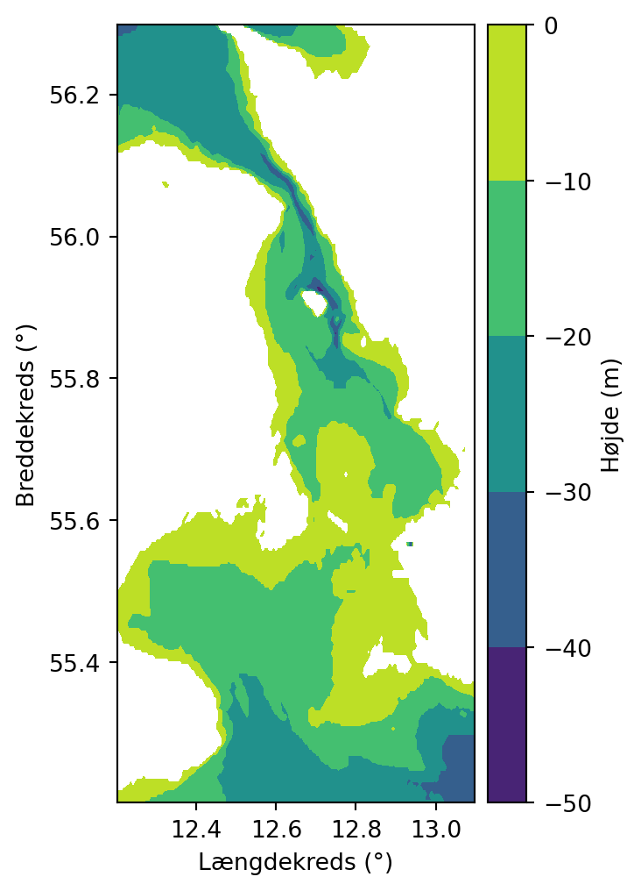
ax = da.plot.contour(figsize=(8,8), cmap="plasma")
ax.set_xlim([12.5, 12.9]);
ax.set_ylim([55.8, 56]);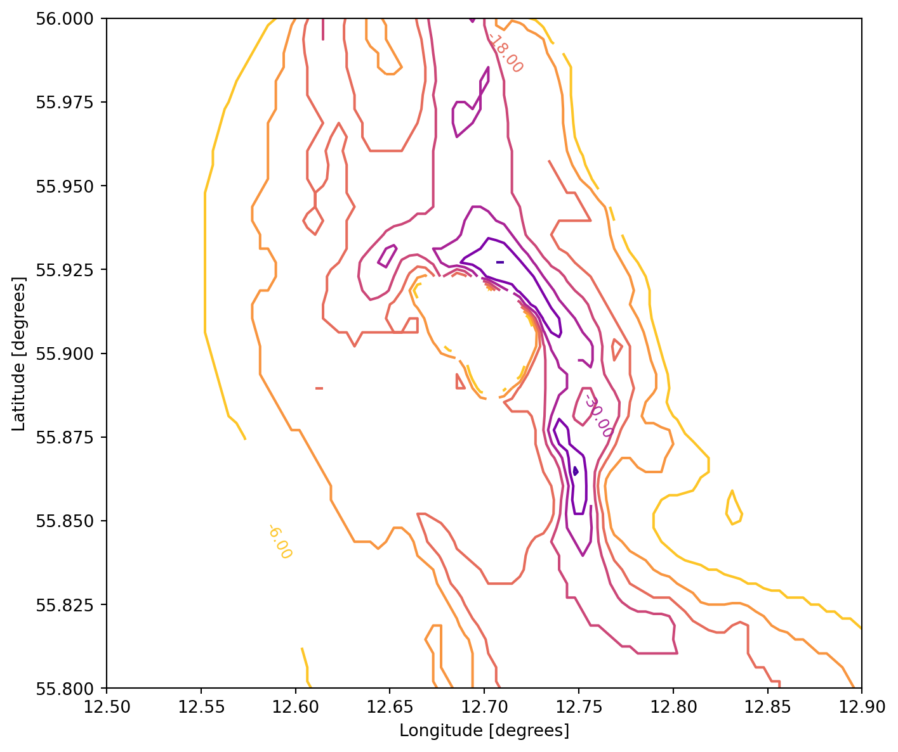
da.plot.hist(bins=20);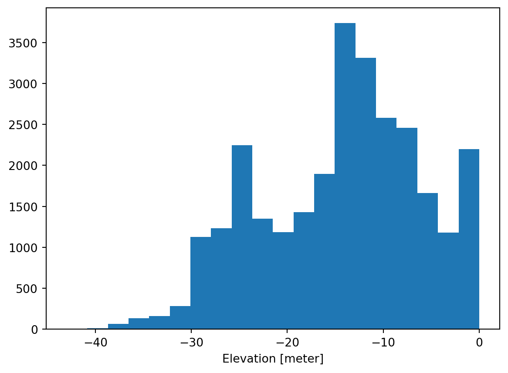
Dfs3
fn = "../tests/testdata/test_dfs3.dfs3"
dfs = mikeio.open(fn)
dfs<mikeio.Dfs3>
geometry: Grid3D(nz=34, ny=17, nx=21)
items:
0: Temperature <Temperature> (degree Kelvin)
time: 2 steps
start time: 2020-12-30 00:00:00dfs.geometry<mikeio.Grid3D>
x: [0, 0.25, ..., 5] (nx=21, dx=0.25)
y: [0, 0.25, ..., 4] (ny=17, dy=0.25)
z: [0, 1, ..., 33] (nz=34, dz=1)
origin: (10, 54), orientation: 0.000
projection: LONG/LATds=dfs.read()
ds<mikeio.Dataset>
dims: (time:2, z:34, y:17, x:21)
time: 2020-12-30 00:00:00 - 2020-12-30 01:00:00 (2 records)
geometry: Grid3D(nz=34, ny=17, nx=21)
items:
0: Temperature <Temperature> (degree Kelvin)ds.Temperature.plot();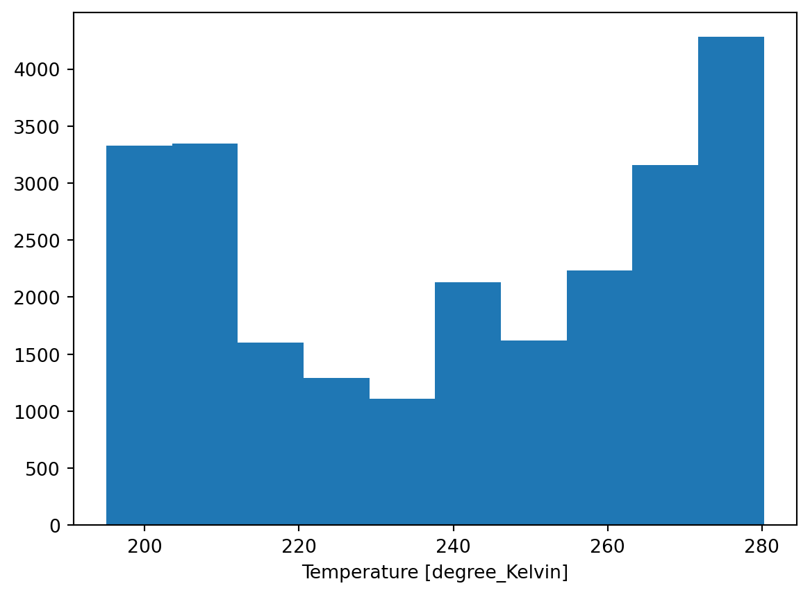
ax = ds.Temperature[:,0,:,:].plot.contourf();
ax.grid()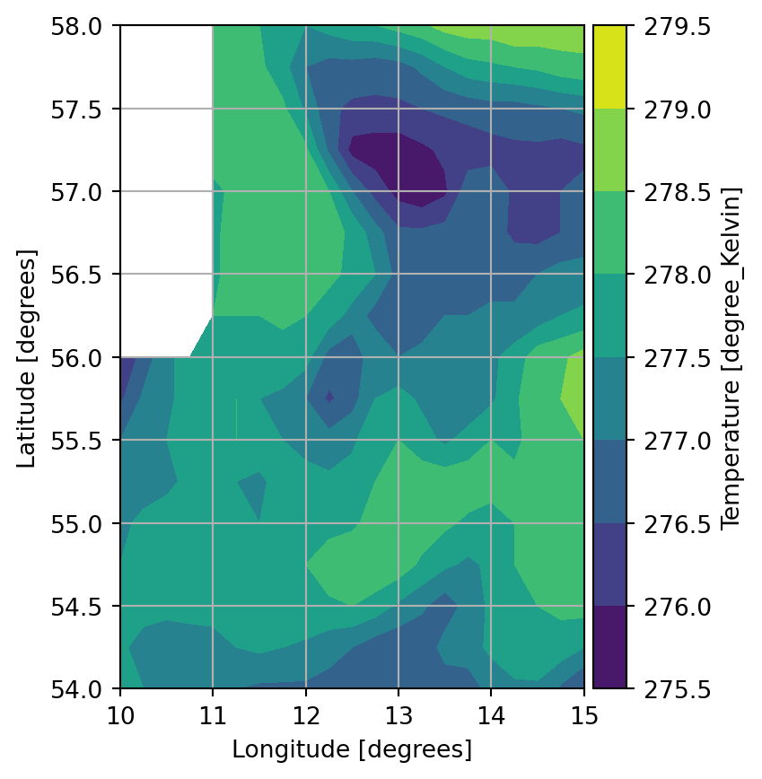
ds.Temperature[:,0,:,0].plot();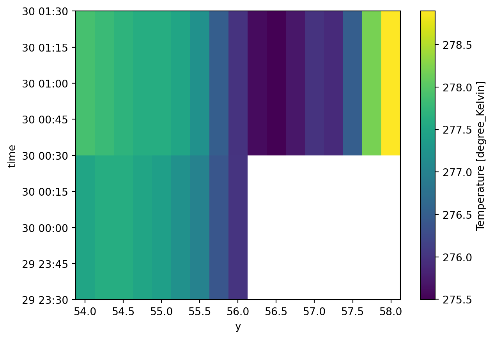
ds=dfs.read(layers=0)
ds<mikeio.Dataset>
dims: (time:2, y:17, x:21)
time: 2020-12-30 00:00:00 - 2020-12-30 01:00:00 (2 records)
geometry: Grid2D (ny=17, nx=21)
items:
0: Temperature <Temperature> (degree Kelvin)ds.Temperature.plot();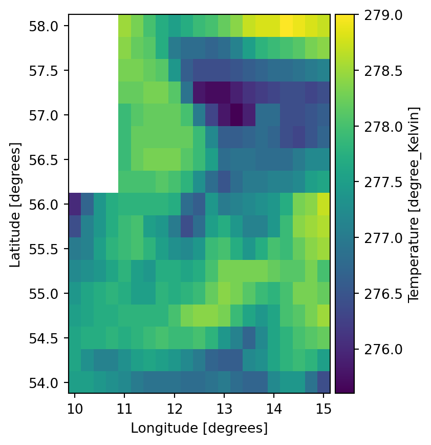